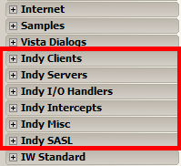
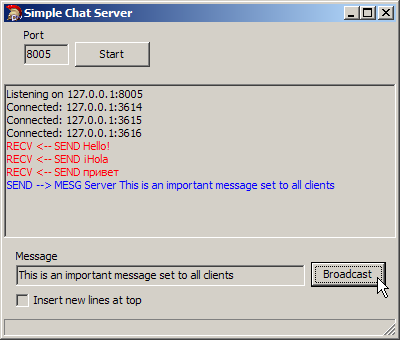
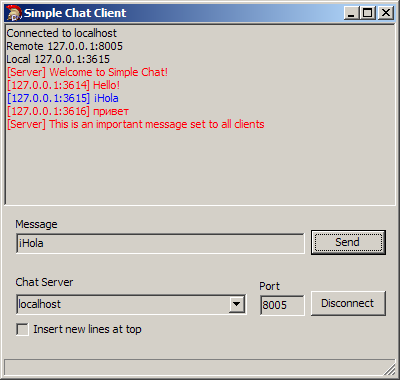
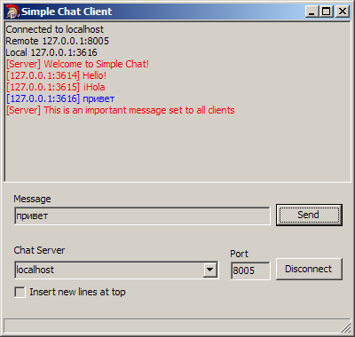

Note: These projects are using 3rd party networking components (Indy) which are not supported with the free Turbo C++ 2006 version. In the examples on this page, the client and server were built with RAD Studio 2010, which includes the Indy components in the IDE. Some slight modifications were made to the code to support XE 3 and later versions of RAD Studio. You can download the project for XE 3 here. (It should work in XE 4 without modifications. I'm not sure about XE or XE 2, though.)
Session #13
Rather than write a book on these components, I'm just going to point to some references online. Realize that most of the code samples are written in Delphi, but you should be able to follow along. Also, some of the examples are a few years old, but that isn't a problem since socket programming hasn't changed much over the years.
There are over 100 components included with Indy and they are arranged among 6 categories:

All of the components give you a very nice object-oriented way of dealing with networking. The most basic components are the TCP client and server components which allow you to do almost anything. There are higher level components (such as FTP, SMTP and HTTP) which provide concrete implementations for those protocols. I'm going to demonstrate a very simple client/server chat program using the lower-level TIdTCPClient and TIdTCPServer components. These will be used to implement the client and server, respectively.
There will be a single server that will service an unlimited number of clients. In the screen shots below, there is one server and 3 clients. This demo is intentionally kept very simple so as to not confuse you with a lot of non-network-related stuff. However, given this simple demo, you could easily extend it into a very usable chat system.
The server lets you start the server on any available port. All messages from clients will be shown in the window. If the server wants to send a message to all of the clients, it can enter text and then broadcast it. This is really about all there is to the server right now. The output is pretty sparse, but it could very easily be enhanced. Adding information about which client sent which message could be displayed, as well as a list of all connected clients. These are all trivial to add to this server (and are exercises for the student). Since the server doesn't do much, it's actually easier to code up than the clients (which, in the real world, would provide all kinds of features for the users).
Server 
Here are some screen shots from 3 clients that are all connected and chatting, albeit, not saying much. Notice that the chat system supports Unicode characters (for non-English languages). I'll talk about this a little at the end. The images show English, Spanish, and Russian (for Prof. Volper!), although all languages are supported.
Client #1 Client #2 Client #3  
Project files (RAD Studio 2010) (XE 3) - to build it yourself. Includes both client and server projects. This is from RAD Studio 2010 and won't build with the free Turbo C++ 2006.
Because this is a very simple demonstration, the protocol for the chat protocol is equally simple. In fact, there are only two types of messages that can be sent between the client and server.
Client messages to the server: (Client --> Server)
Examples:SEND message_text
The server takes the message and broadcasts it to all connected clients.SEND Hello SEND I am not a great fool, so I can clearly not choose the wine in front of you. SEND ¿Qué hora es?
Example:CMD command
Currently, only the QUIT command is supported and even that isn't really needed.CMD QUIT
Server messages to the clients: (Server --> Client)
Examples:MESG CLIENT_ID message_text
The CLIENT_ID is sent so that when the clients receive the message they know which client sent it. This string can be anything that uniquely identifies the sender. In this demo, the CLIENT_ID is simply the IP address and port of the sender. The server uses a CLIENT_ID of Server for simplicity.MESG 127.0.0:1234 Hello MESG Server I am not a great fool, so I can clearly not choose the wine in front of you. MESG Nigel ¿Qué hora es?
The server component is named TIdTCPServer and should be the fourth component under the Indy Servers section. Depending on the exact version of Indy you are using, this position could change. You can always search for it and find it that way.
The server really doesn't do much besides routing the messages between the clients. It doesn't have to be visual. However, developing a program without any visual feedback (even if only text-based) is impossible. When I create software, I always have lots of output during the development stage. How else can you tell if things are working correctly? For a chat server, it is nice to be able to see the messages that are going between the clients. (Yes, in a real-world situation this could be a privacy issue, but, on the Internet, there is no privacy anyway. Get used to it.)
Briefly, this is how the server works:
That's pretty much it in a nutshell. Of course, there are lots of details handled by the component, so you won't usually have to deal with them. For example, each client connection is in its own thread. The list of clients that the server maintains is actually a TThreadList, which is simply a (thread-safe) list of threads (clients). Look at the source code to get a feel for how this works. Pay close attention to the two events mentioned (OnConnect and OnExecute).
The client component is named TIdTCPClient and should be the first component under the Indy Clients section.
Briefly, this is how the client works:
That's it in a nutshell. However, there is one thing that makes this procedure problematic. That is the infinite loop that is waiting for messages. If you've read the documents about the Indy Components, you'll remember that they use blocking functions. In other words, while the client is waiting for messages from the server (via the OnConnected event handler which never returns), the client will seem to "lock up". This isn't good. There are several ways to deal with this, such as dealing with the messages in a background thread. For a very robust and full-featured chat client, that would be a good way to go. However, for this simple chat client, there is a component which solves this blocking stuff for us. It's called the AntiFreeze component (TIdAntiFreeze). You'll find this component in the Indy Misc category in the component palette. Simply adding this component to your form will allow it to respond to other Windows messages while the OnConnected event handler is blocked. It's a nifty component that works great.
Well, some of you have heard this before: I lost 2 hours of my life again... Unicode! Sure, it's easy once you figure it out (or Google for it.) I just assumed that everything in Indy was already being done in Unicode. But, it wasn't (which is correct and by design). Once I figured that out and found the one-liner that I needed, all was well again. Since this is a networked chat program, I thought it would be nice to support languages other than just English, especially when it wasn't hard to do. You just have to set the encoding to something that will handle other code pages:
In the server's OnConnect event handler:
In the client's OnConnect event handler:AContext->Connection->IOHandler->DefStringEncoding = TIdTextEncoding::UTF8;
tcpClient->IOHandler->DefStringEncoding = TIdTextEncoding::UTF8;
You'll see an #ifdef in the code where you can turn this on and off. I left it in because it shows how little actually had to change and you might want to experiment with it. You wouldn't know how much time I wasted on that Unicode stuff by looking at that small amount of code. Well, now you don't have to do it! Oh, by the way... You're Welcome!.
Newsgroup article that explained what I was missing. BTW, the guy that responded (Remy Lebeau, a.k.a. Gambit) works on the project and has been answering newsgroup questions for probably 10 years or more. He's helped me on some sticky issues in the past.
Exercises
As you can see, this is a very bare-bones chat client/server program. However, it shows the fundamentals of using two of the Indy components. Other things that you can experiment with include:
that would be sent to the server upon connecting. The server would welcome the client (with some return string) and then broadcast the client's name to all of the other connected clients.HELLO Name
This command contains the names of all connected clients.USERS user1 user2 user3 user4 ...